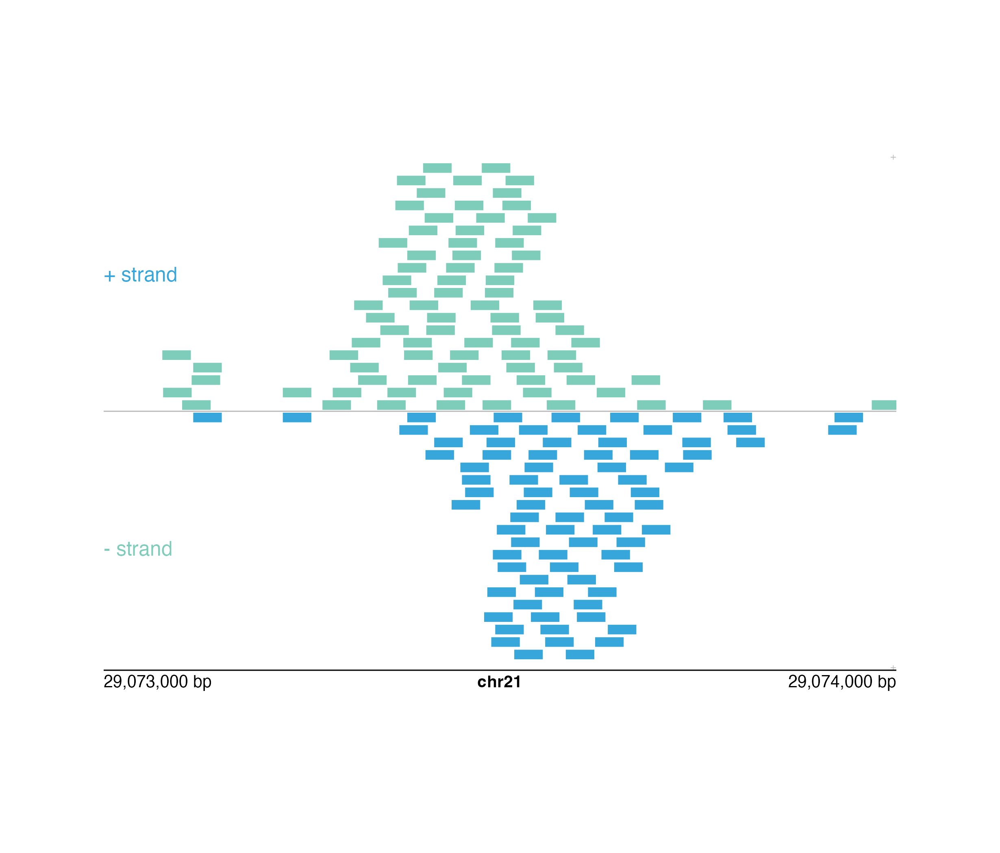

Plot genomic range elements in a pileup or collapsed format
plotRanges(
data,
chrom,
chromstart = NULL,
chromend = NULL,
assembly = "hg38",
fill = "#7ecdbb",
linecolor = NA,
collapse = FALSE,
boxHeight = unit(2, "mm"),
spaceWidth = 0.02,
spaceHeight = 0.3,
limitLabel = TRUE,
strandSplit = FALSE,
bg = NA,
baseline = FALSE,
baseline.color = "grey",
baseline.lwd = 1,
x = NULL,
y = NULL,
width = NULL,
height = NULL,
just = c("left", "top"),
default.units = "inches",
draw = TRUE,
params = NULL,
...
)Data to be plotted; as a character value specifying a BED file path, a data frame in BED format, a character value specifying a .bam file path where a bam index file (.bam.bai) is in the same directory, or a GRanges object.
Chromosome of region to be plotted, as a string.
Integer start position on chromosome to be plotted.
Integer end position on chromosome to be plotted.
Default genome assembly as a string or a
assembly object.
Default value is assembly = "hg38".
A single character value, a vector, or a
colorby object specifying fill colors of range elements.
Default value is fill = "#7ecdbb".
A single character value, a vector, or a
colorby object specifying the color of the lines
outlining range elements. Default value is linecolor = NA.
Special options include:
NA: No line color.
"fill": Same color as fill.
.
A logical value indicating whether to collapse
range elements into a single row, or into
two rows if strandSplit = TRUE.
If collapse = TRUE, boxHeight will be ignored and elements
will be the height of the entire plot if strandSplit = FALSE or
be the height of half of the entire plot if strandSplit = TRUE.
Default value is collapse = FALSE.
A numeric or unit object specifying height of range element
boxes. Default value is boxHeight = unit(2, "mm").
A numeric value specifying the width of minimum spacing
between range element boxes, as a fraction of the plot's genomic range.
Default value is spaceWidth = 0.02.
A numeric value specifying the height of spacing between
range element boxes on different rows, as a fraction of boxHeight.
Default value is spaceHeight = 0.3.
A logical value indicating whether to draw a "+"
when not all elements can be plotted in the plotting space. Default
value is limitLabel = TRUE.
A logical value indicating whether plus and
minus-stranded elements should be separated. Elements can only be
split by strand if a strand column is found in data.
Default value is strandSplit = FALSE.
Character value indicating background color.
Default value is bg = NA.
Logical value indicating whether to include a
baseline along the x-axis. Default value is baseline = FALSE.
Baseline color.
Default value is baseline.color = "grey".
Baseline line width.
Default value is baseline.lwd = 1.
A numeric or unit object specifying ranges plot x-location.
A numeric, unit object, or character containing a "b" combined with a numeric value specifying ranges plot y-location. The character value will place the ranges plot y relative to the bottom of the most recently plotted plot according to the units of the plotgardener page.
A numeric or unit object specifying ranges plot width.
A numeric or unit object specifying ranges plot height.
Justification of ranges plot relative to its (x, y) location.
If there are two values, the first value specifies horizontal
justification and the second value specifies vertical justification.
Possible string values are: "left", "right",
"centre", "center", "bottom", and "top".
Default value is just = c("left", "top").
A string indicating the default units to use
if x, y, width, or height are only given
as numerics. Default value is default.units = "inches".
A logical value indicating whether graphics output should
be produced. Default value draw = TRUE.
An optional pgParams object containing relevant function parameters.
Additional grid graphical parameters. See gpar.
Returns a ranges object containing relevant
genomic region, coloring data, placement, and grob information.
A ranges plot can be placed on a plotgardener coordinate page by providing plot placement parameters:
plotRanges(data, chrom,
chromstart = NULL, chromend = NULL,
x, y, width, height, just = c("left", "top"),
default.units = "inches")This function can also be used to quickly plot an unannotated BED plot by ignoring plot placement parameters:
plotRanges(data, chrom,
chromstart = NULL, chromend = NULL)## Load ranges data in BED format
library(plotgardenerData)
data("IMR90_ChIP_CTCF_reads")
## Create page
pageCreate(width = 7.5, height = 5, default.units = "inches")
## Plot and place a pileup ranges plot
pileupPlot <- plotRanges(
data = IMR90_ChIP_CTCF_reads, chrom = "chr21",
chromstart = 29073000, chromend = 29074000,
assembly = "hg19",
fill = colorby("strand", palette =
colorRampPalette(c("#7ecdbb", "#37a7db"))),
strandSplit = TRUE,
x = 0.5, y = 0.25, width = 6.5, height = 4.25,
just = c("left", "top"), default.units = "inches"
)
#> Warning: Not enough plotting space for all provided elements. ('+' indicates elements not shown.)
#> Warning: Not enough plotting space for all provided elements. ('+' indicates elements not shown.)
#> ranges[ranges1]
## Annotate genome label
annoGenomeLabel(
plot = pileupPlot, x = 0.5, y = 4.5,
just = c("left", "top")
)
#> genomeLabel[genomeLabel1]
## Add text labels
plotText(
label = "+ strand", fontcolor = "#37a7db", fontsize = 12,
x = 0.5, y = 1.25, just = "left"
)
#> text[text1]
plotText(
label = "- strand", fontcolor = "#7ecdbb", fontsize = 12,
x = 0.5, y = 3.5, just = "left"
)
#> text[text2]
## Hide page guides
pageGuideHide()
